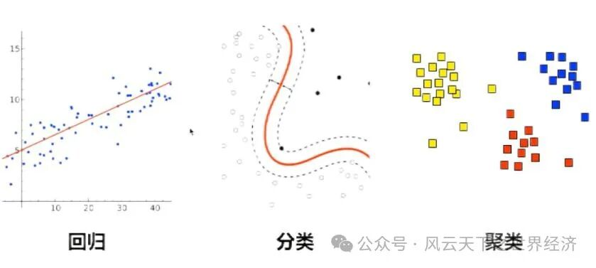
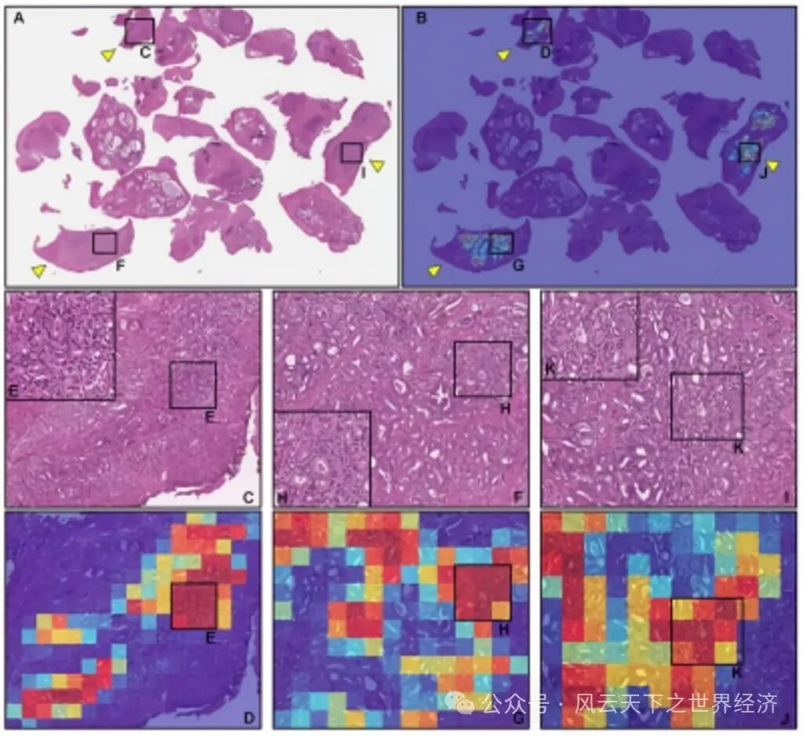
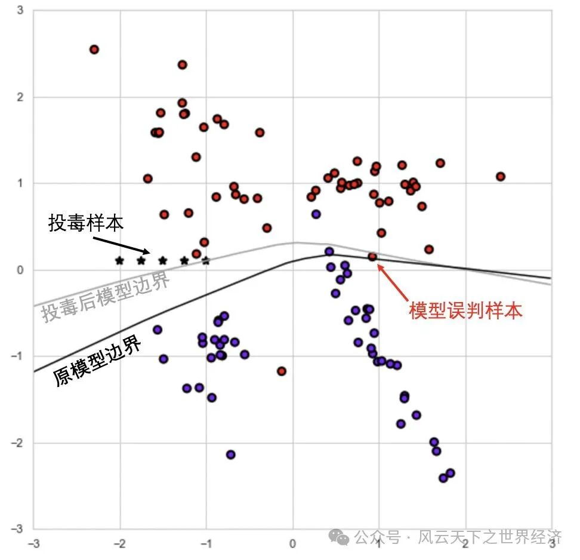

让预测变得廉价的技术
在《AI极简经济学》中，三位经济学家认为：AI在经济学上的意义就在于它让预测变得廉价。根据简单的供求原理，当预测变得廉价，预测就会变得更多。第二次工业革命使电力变得廉价，计算机信息技术革命使信息变得廉价，所以电力和信息已经占据了我们周围的大部分空间和时间。由此不难得知，遵循人工智能发展的浪潮，“预测”将会充斥我们的生活。
“预测”是什么？预测是填补缺失信息的过程。预测的功能是基于已有的信息生成新的信息，抑或是已存在但未被识别的信息，因此预测并不涉及不可知的事物。人工智能能够实现的预测是对人类能够知晓的事物而言的，比如，自动驾驶技术是通过学习人类的驾驶方式从而无限接近于“不犯错误”的人类驾驶能力，自动驾驶能够规避人类因疲劳或注意力涣散导致的操作失误，但无法实现“速度与激情”式的飙车，因为现实中也很少有人能够实现类似的技术，人工智能缺乏学习的素材。
“预测”与创造力无关，现在的人工智能缺乏创造力。目前主流的生成式人工智能主要依托大语言模型（Large Language Model，LLM），依靠文本生成、文本图像生成和语音文本生成，人工智能模型可以生动的模仿各种绘画技巧，音乐技法，围棋大师的博弈策略，司机的驾驶习惯，但这都建立在利用已有素材训练的基础上。爱因斯坦曾言：“智能的真正标识不是知识，而是想象。”从这个层面，或许人工智能更加准确的名字是“人工算法”和“人工语言”，根据广义歌德尔定理，智能分为算法智能（algorithmic intelligence，AI）、语言智能（linguistic intelligence，LI）和想象智能（imaginative intelligence，II），诸如机器学习和计算机视觉的“人工算法”早已被广泛的应用于诸如视频推荐系统和信用卡交易的审核中；以GPT为代表的“人工语言”则利用了大语言模型，使我们可以用人类的语言而非编程语言与人工智能交流并获得产出。然而最后一个部分，即“想象智能”，仍是目前人工智能无法逾越的高峰。
哥德尔——哥德尔不完备定理的创造者
从确定性转向概率性的预测
人工智能在预测领域取得的突破有以下两方面：1.由确定性的预测流程转向概率性的预测流程；2.由确定性的预测结果转向概率性的预测结果。
确定性预测：回归
在诸如机器学习的预测技术出现以前，传统的预测是依靠“回归”实现的，“回归”的目的是找到因变量与自变量之间一条统一的，拟合优度最高的函数。回归依靠人类主观的取舍变量，构建确定性的数学模型来实现。因此，回归是由确定的函数得到确定性预测结果的过程。这其中有两个隐患：首先，使用“回归”预测的结果是唯一的均值，它反映了预测值与真实值的偏离程度。在一场预测中，即使均值与真实值的平均误差极小，它也可能不等于任何一个真实值。对于现实的商业活动而言，任何与真实值偏离的预测都可能会带来成本，因此回归并没有被应用到大体量、多结果的商业化预测中。其次，建立“回归”模型的过程是人为的。然而过往的经验已多次证明了，人类建立回归模型所依据的理论和逻辑完全有可能是错误的。即使它在大方向上正确，也极有可能因为没有纳入正确的变量，或没有阐释清楚每个变量间的关系而导致大相径庭的预测结果。比如在2007年，标准普尔评级机构利用回归预测的方式预测AAA级CDO（Collateralized debt obligation，对担保债务凭证）在五年内无法履约的概率不足1/800。然而在五年内，有超过1/4的CDO未能履约。这次错误的预测也成为了2008年美国次债危机的助推器。因此，依靠既定函数和给定变量所实现的传统回归逐渐难以满足现代商业活动对预测的频率和精确度的需求。
标准普尔金融服务有限责任公司总部
概率性预测：AI
人工智能（尤其是深度学习）的预测主要依靠“反向传播”的方法实现，它类似人脑的学习方法，先通过演绎法吸收大量案例，再通过归纳法对现象进行高度提炼。比如，图像识别技术在判断“男性”时，需先将大量男性和女性图片纳入训练。随着数据量和算法的进步，图像识别可以对更精细的标签下判断，从性别延申到年龄、皮肤状态、表情神态等。在这种预测下，人类并不需要事先阐述预测模型的范式和假设，也不需要手动编辑各类变量的互动形式，人类甚至不清楚人工智能学习的逻辑是什么，正如我们不清楚自己是如何开始学会分辨面孔一样。人工智能将会自动适应包含庞大变量和数据的算法结构，并在动态中给予概率性的预测。这种预测在过程上是AI自主的，且会不断适应数据量和变量结构的变化；在结果上，它是真实值导向且精确到个体维度上的。比如，当我预测一张信用卡可能面临的盗刷次数时，如果回归与人工智能同时达到了96%的准确率，那么对于回归而言，它将有96%的把握确定在某个置信区间下，这张卡的平均盗刷率；而对于人工智能而言，它能够在每次刷卡前判断本次是否为盗刷，且判断结果的准确度为96%。对比之下，人工智能提供的预测明显更加符合商业化需求。

左侧为回归预测，中间和右侧为机器学习预测模式（分类和聚类）
认知分工：人机结合的新范式
近年来的一些论调认为人工智能将在未来全面替代人类，我们将在各方各面被人工智能赶超，并最终失去自身价值。但杰文斯悖论告诉我们：技术进步可以提高资源的利用效率，其结果是增加而不是减少社会对该资源的需求，因为效率的提高将导致生产规模的扩大。根据工业革命和计算机革命的经验，我们可以预见到人工智能革命在淘汰部分码农，统计员和流程性工作以外，将带来对诸如数据工程师，决策工程师等岗位的需求，因为向人工智能询问，提示和评估结果的需求将会不断提高。另外，人类与人工智能各有所长，且双方能力的壁垒在可预计的未来无法被互相侵犯。了解人类和人工智能的能力边界，我们可以更好的理解人机分工的强大力量。
首先能够确定的是：人工智能并没有自觉的道德和情感判断，人工智能能够对客观现实进行“预测”，但无法做出基于取舍的“判断”。比如，人工智能可以预测当价格每提升一元，将会对当月需求量和客户留存率产生多大程度的影响。然而，如果你要问人工智能：我应当提价以追求短期利润，抑或是不提价来维护长期客户关系？人工智能将无法做出判断，因为这个决策涉及到数字难以量化的变量：道德与情感判断。迄今为止，它仍是人类独有的能力。
其次，人工智能难以应对数据量的不足或新的变数。让我们回到上一个问题，如果该企业选择维护长期客户关系，将对品牌力产生多少好处，又会对用户长期的购买行为产生多大影响；如果现在不提高盈利能力，能否应对股东要求的回报或拓展新的业务方向...类似的企业战略决策并没有可供人工智能训练的数据，也包含着历史数据无法涵盖的新变动，因此人工智能难以在这类问题上给出有效的回应。相比之下，人类就十分擅长在数据不足的情境下做出决策，并且在巨变中把握机会。比如，有些人我们虽然只见过一面，却能够一眼认出；在行业发生变革的前夕，也总有少数高瞻远瞩的战略家以狠辣的眼光预测到颠覆性的变化。直到目前，我们尚不清楚人类的这些能力是如何获得的，但是我认为想象力无疑在其中起到了关键性的作用，而我们尚无法通过编码和训练使人工智能突破这一瓶颈。综合来讲，如果我们把认知区分为对客观事实的“预测”以及在此之上做出主观取舍的“判断”，那么人类与人工智能的分工范式将会是AI预测与人类判断的结合。
人类将信任AI，甚至信仰AI
在近期举办的中国病理学年会上，人工智能成为了会场上的明星。依靠图像识别技术，人工智能能够辨别数万种不同形态的癌细胞和病灶组织，但还是有细心的专家发现在大屏幕展示的某些病理切片中，AI漏判了一些比较微小的癌变组织，而这一失误将对切除手术的判断造成巨大影响，乃至危及病人的生命。中华医学会病理学分会副主任委员张祥宏表示：“即使如此，AI在病理识别领域进步迅速，是病理科发展的必然趋势。”

日本数字病理学解决方案“PidPort”高精度检测前列腺癌
事实上，目前AI病理识别正在面临着群众接受度低的问题，这个问题在下沉市场尤为明显。它的背后，是患者对于AI缺乏信任。
从人性的角度来讲，相比信任冷冰冰的机器，我们更愿意信任有血有肉的人。但是更进一步思考，我们愿意信任的真的是人类的“正确率”吗？我们或许更想要的是人类温暖的承诺和双方情感的共鸣，这会使得我们感到安心，在情感上得到慰藉，即使这种慰藉是虚伪的。
并且这种慰藉有时也是脆弱的。
比如，以交通工具举例，我们先用汽车替代了马车，又在远距离上用飞机替代了汽车。每当新技术催生新的交通工具时，我们都会认为原始手段是更“温暖”或“有人性”的，而新技术是“可怕”且“不确定”的。但是规模效益使得新技术的性价比不断提升，最终人们会不得不普遍接受技术的迭代。此时，我们正处于一个AI预测的成本不断降低的时代，我认为大多数人类将会不得不接受AI，并且信任AI。
以上的内容是合理且保守的预测，那么在更遥远的未来，人类与人工智能的关系是否会更进一步？一个更加激进的预测是：人类将会信仰人工智能，或至少有相当一部分人会信仰它。
首先，信仰源自于意义创造，是人类为合理化自己行径所编织的意义之网。（即使是虚无主义的信仰者，也期待自己对虚无主义的逻辑得到验证，而这种期待就是虚无主义者为自己创造的意义。）世界荒谬而矛盾，而人类在这样的世界里苦苦挣扎，渴望逻辑与意义。不论正确与否（事实上，”正确“本身是个相对概念，以族群、阶级和群体为区分），宗教、主义、道德、政治观点等概念都是人类用来对抗荒谬，寻找意义的手段。从前，这些概念依靠少数聪明人对社会发展规律的总结和想象，然而当人工智能所获取的信息量远远超过人类的理解范围时，当人工智能不断发展并超越人类智能时，当人工智能从机械执行命令的“工具”跃升为具有主动性的“想象智能”时，或许天平将发生倾斜。人工智能将取代人类成为科学领域的先驱。而人工智能的存续发展源自于万物互联的网络系统，因此对碳基生命而言至关重要的肉身和物质实体对于它们则不值一提，人工智能也没有传统意义上“繁衍”的概念，取而代之的则是“复制”或者“迭代”。于是，我们很难期待未来高度进化的人工智能拥有和人类相似的道德观念和价值体系。也就是说，当AI越发展，它将越远离人类，越难以掌控，越难以理解。
而信仰，则同时包含对强者的崇拜、对已知的理解和对更大的未知的难以理解。
事实上，如若此等如同科幻小说一般的未来成真，那对于人类而言更重要的也不在于是否信仰人工智能，而是关乎族群生存的更加基本的问题。
AI与权力结构：重塑组织模式
在组织间的视角下，我们无疑会看到AI巨头的崛起，由此导致寡头企业的更新换代。首先，AI的升级是基于大数据训练所实现的能力迭代，数据和算法作为AI时代重要和稀缺的资产，将不可避免的走向资本密集。其次，在缺乏外部约束的条件下，AI会产生“赢家通吃”的市场格局，正如在操作系统市场中，如果你只有竞品一半或90%的应用程序，那么你就会走向毁灭。AI也是如此：即使我比我的竞品高出1%的预测准确率，我也将会攫取竞品的全部市场份额，这是一种“数据/算法规模经济”，随着投入的增加，AI商业化的平均成本将会迎来一个拐点，在此拐点后，平均成本不断降低。因此AI工具领域的市场竞争必然是大型资本之间赌命的博弈，这些资本要么注资成立新企业（如Open AI、月之暗面），要么在企业内部成立AI部门（如文心一言）。前者的优势是可以保持充分独立性，排除组织内部的交易成本，并广泛吸纳最合适的人才；后者的优势是能够将成果迅速应用于其他业务，最大化业务间的协同效应。然而，在这场竞争中获胜的关键还应当是技术的耕耘能力。
在组织内部的视角下，我们将会看到更加扁平的组织结构，因为AI工具使得每个人能力和信息的边界被扩大了，每个人能力的区分也弱化了。这就使得组织在人才选拔和培养上更加注重“自主性”，从而扩大个体的权责范围，每个个体自主决策的空间扩大，就会导致行政层级的减少，组织将会扁平化。然而我们也需要警惕，个人能力边界的提高实际上也是个人破坏性的提高，在AI工具的协助下，欺诈、破坏数据资产、干扰决策等行为的风险和破坏力都在同步提高，这种风险带来的影响不仅发生于企业内部，企业外的其他非营利性组织，乃至政府部门和军队组织都会面临更加严峻的形势。

AI数据投毒——利用AI破坏数字资产的一种手段